Performance Optimization Guide
This guide provides recommendations for optimizing your website or application performance when running in Macro Browser.
Understanding Macro Browser's Architecture
Macro Browser has several key architectural features that affect performance:
- Multi-Process Architecture: Like other Chromium-based browsers, Macro Browser uses separate processes for the browser core, renderer, GPU, and networking.
- Privacy Features: Privacy protection mechanisms may impact performance in specific scenarios.
- P2P VPN Integration: Network requests may be routed through the P2P VPN network.
- Memory-First Storage: Macro Browser minimizes disk operations for privacy.
Performance Best Practices
Resource Loading Optimization

Prioritize Critical Resources
<!-- Preload critical CSS -->
<link rel="preload" href="/css/critical.css" as="style">
<!-- Preload critical fonts with crossorigin attribute -->
<link rel="preload" href="/fonts/main.woff2" as="font" type="font/woff2" crossorigin>
<!-- Inline critical CSS -->
<style>
/* Critical CSS here */
.header { /* ... */ }
.hero { /* ... */ }
</style>
Lazy Loading
<!-- Images -->
<img src="placeholder.jpg"
data-src="real-image.jpg"
loading="lazy"
class="lazy-image">
<!-- For browsers that don't support native lazy loading -->
<script>
if ('loading' in HTMLImageElement.prototype) {
// Convert to use native lazy loading
document.querySelectorAll('img.lazy-image').forEach(img => {
img.src = img.dataset.src;
});
} else {
// Use intersection observer polyfill
// ...
}
</script>
Efficient JavaScript Loading
<!-- Defer non-critical JavaScript -->
<script src="app.js" defer></script>
<!-- Use type="module" for modern browsers (automatically deferred) -->
<script type="module" src="app.mjs"></script>
<!-- For legacy browser support -->
<script nomodule src="app.legacy.js" defer></script>
Rendering Performance
DOM Size Optimization
Macro Browser, like all Chromium-based browsers, performs better with smaller DOM trees:
- Keep DOM nodes under 1,500 if possible
- Maximum depth of 32 elements
- No parent node with more than 60 child nodes
CSS Optimization
/* Avoid expensive CSS properties */
.good {
transform: translateZ(0); /* Uses GPU acceleration */
}
.avoid-when-possible {
box-shadow: 0px 0px 10px rgba(0,0,0,0.5); /* Can be expensive */
filter: blur(5px); /* Expensive for large elements */
position: fixed; /* Can trigger full repaints */
}
/* Use efficient selectors */
.efficient { color: blue; } /* Good - class selector */
.parent > .child { color: blue; } /* OK - one level of inheritance */
.parent .child .grandchild { color: blue; } /* Avoid - expensive */
Animation Performance
For smooth animations, especially in privacy-focused browsers:
// Use requestAnimationFrame for animations
function animate() {
// Update animation
element.style.transform = `translateX(${position}px)`;
// Schedule next frame
requestAnimationFrame(animate);
}
// Start animation
requestAnimationFrame(animate);
// Prefer CSS animations for simple cases
const styles = `
.animated {
transition: transform 0.3s ease-out;
will-change: transform;
}
`;
Compositor-Only Properties
For the best animation performance, prefer properties that only affect the compositor:
- Good properties:
transform,opacity - Avoid animating:
width,height,left,top,background-color
Memory Management
Efficient Data Structures
// Use appropriate data structures
// Map for key-value pairs with non-string keys
const userCache = new Map();
// Set for unique values
const uniqueVisitors = new Set();
// TypedArrays for binary data
const binaryData = new Uint8Array(1024);
Memory Leaks Prevention
Particularly important in Macro Browser as it runs a memory-first approach:
class Component {
constructor() {
this.element = document.createElement('div');
this.bindEvents();
}
bindEvents() {
// Store reference to bound function for later removal
this.boundClickHandler = this.handleClick.bind(this);
this.element.addEventListener('click', this.boundClickHandler);
}
handleClick() {
// Handle click
}
destroy() {
// Remove event listeners
this.element.removeEventListener('click', this.boundClickHandler);
// Remove references
this.element = null;
this.boundClickHandler = null;
}
}
Network Optimization
Bandwidth Efficiency
Macro Browser routes traffic through privacy layers, making bandwidth optimization particularly important:
// Compress API responses
const compressionMiddleware = (req, res, next) => {
// Only compress certain content types
if (shouldCompress(req)) {
res.setHeader('Content-Encoding', 'gzip');
// Compress response
}
next();
};
// Client-side request batching
async function batchRequests(requests) {
// Combine multiple related API calls
return fetch('/batch', {
method: 'POST',
headers: { 'Content-Type': 'application/json' },
body: JSON.stringify({ requests })
}).then(res => res.json());
}
Cache-Aware Programming
// Use cache headers properly
app.get('/api/data', (req, res) => {
// Add cache headers
res.setHeader('Cache-Control', 'public, max-age=300');
res.setHeader('ETag', generateETag(data));
res.json(data);
});
// Client-side caching with Service Worker
const CACHE_NAME = 'app-v1';
self.addEventListener('install', (event) => {
event.waitUntil(
caches.open(CACHE_NAME).then((cache) => {
return cache.addAll([
'/',
'/index.html',
'/styles.css',
'/app.js',
]);
})
);
});
Web3 Specific Optimizations
Efficient Contract Calls
// Batch reads using multicall
async function batchContractCalls(contract, methodName, paramSets) {
const multicallContract = new ethers.Contract(
MULTICALL_ADDRESS,
MULTICALL_ABI,
provider
);
const calls = paramSets.map(params => ({
target: contract.address,
callData: contract.interface.encodeFunctionData(methodName, params)
}));
const { returnData } = await multicallContract.aggregate(calls);
return returnData.map(data =>
contract.interface.decodeFunctionResult(methodName, data)
);
}
State Management for Web3
// Cache transaction data
class TransactionCache {
constructor(ttlSeconds = 60) {
this.cache = new Map();
this.ttl = ttlSeconds * 1000;
}
set(txHash, data) {
const expiry = Date.now() + this.ttl;
this.cache.set(txHash, { data, expiry });
}
get(txHash) {
const cached = this.cache.get(txHash);
if (!cached) return null;
if (cached.expiry < Date.now()) {
this.cache.delete(txHash);
return null;
}
return cached.data;
}
}
Macro-Specific Optimizations
Privacy-Aware Analytics
Standard analytics often get blocked. Consider privacy-friendly alternatives:
// Simple privacy-respecting analytics
const sendAnalytics = (event) => {
// Only collect non-identifying metrics
const data = {
eventName: event,
// No user identifiers
screen: {
width: window.innerWidth,
height: window.innerHeight
},
timestamp: Date.now()
};
// Use sendBeacon for reliability
navigator.sendBeacon('/analytics', JSON.stringify(data));
};
VPN-Aware Networking
When the P2P VPN is active, network requests might have different characteristics:
// Check if VPN is enabled (Macro-specific feature)
async function isVpnEnabled() {
if (window.ethereum && window.ethereum.isMacro) {
try {
return await window.ethereum.request({
method: 'macro_isVpnEnabled'
});
} catch (e) {
console.error('Error checking VPN status:', e);
return false;
}
}
return false;
}
// Adapt network strategy based on VPN status
async function optimizeNetworkRequests() {
const vpnEnabled = await isVpnEnabled();
if (vpnEnabled) {
// When VPN is enabled:
// 1. Reduce number of connections
// 2. Potentially batch more requests
// 3. Be more aggressive with caching
setNetworkStrategy('vpn-optimized');
} else {
setNetworkStrategy('standard');
}
}
Performance Testing
Browser-Specific Testing
// Detect Macro Browser
function isMacroBrowser() {
return (
// Check for the Macro provider
(window.ethereum && window.ethereum.isMacro) ||
// Check for user agent (less reliable)
navigator.userAgent.includes('MacroBrowser')
);
}
// Conditional testing
function runPerformanceTests() {
const commonTests = [
testPageLoad,
testInteractivity,
];
const tests = isMacroBrowser()
? [...commonTests, testPrivacyFeatures, testVpnPerformance]
: commonTests;
return Promise.all(tests.map(test => test()));
}
Lighthouse Configuration
// Lighthouse CLI configuration for Macro Browser testing
{
"extends": "lighthouse:default",
"settings": {
"skipAudits": [
// Skip audits that may be affected by privacy features
"uses-third-party-cookies",
"third-party-facades"
],
"onlyCategories": [
"performance",
"accessibility",
"best-practices"
]
}
}
Common Performance Issues in Macro Browser
Privacy Features Impact
| Feature | Potential Impact | Mitigation |
|---|---|---|
| Ad/Tracker Blocking | Scripts may fail to load | Don't rely on blocked trackers; use privacy-friendly alternatives |
| P2P VPN | Variable latency | Implement progressive loading; prioritize critical content |
| Anti-Fingerprinting | Canvas/WebGL limitations | Provide fallbacks for fingerprinting-dependent features |
| Memory-Only Mode | No persistent storage | Use synchronization services or export functionality |
Debugging Memory Issues
// Memory profiling helper
class MemoryProfiler {
constructor(sampleInterval = 5000) {
this.readings = [];
this.interval = null;
this.sampleInterval = sampleInterval;
}
start() {
this.interval = setInterval(() => {
if (window.performance && window.performance.memory) {
const { usedJSHeapSize, totalJSHeapSize } = window.performance.memory;
this.readings.push({
time: Date.now(),
used: usedJSHeapSize,
total: totalJSHeapSize
});
// Check for memory growth
this.detectMemoryGrowth();
}
}, this.sampleInterval);
}
stop() {
clearInterval(this.interval);
return this.getReport();
}
detectMemoryGrowth() {
// Simplified leak detection by checking consistent growth
if (this.readings.length < 10) return;
const recentReadings = this.readings.slice(-10);
let consistentGrowth = true;
for (let i = 1; i < recentReadings.length; i++) {
if (recentReadings[i].used <= recentReadings[i-1].used) {
consistentGrowth = false;
break;
}
}
if (consistentGrowth) {
console.warn('Potential memory leak detected: consistent memory growth');
}
}
getReport() {
return {
readings: this.readings,
averageUsage: this.readings.reduce((sum, r) => sum + r.used, 0) / this.readings.length,
maxUsage: Math.max(...this.readings.map(r => r.used)),
growthRate: this.readings.length > 1 ?
(this.readings[this.readings.length - 1].used - this.readings[0].used) /
(this.readings[this.readings.length - 1].time - this.readings[0].time) :
0
};
}
}
Migration Guide for Existing Apps
From Chrome/Firefox to Macro Browser
| Area | Chrome/Firefox Pattern | Macro Browser Pattern |
|---|---|---|
| Storage | localStorage/cookies for all data |
Use memory storage; export critical data |
| Analytics | Full user tracking | Privacy-respecting event counting |
| Performance | Network-heavy operations | Optimize for privacy layers and VPN |
| Web3 | Simple wallet detection | Enhanced security checks and permissions |
Progressive Enhancement for Macro Features
// Feature detection for Macro-specific features
const browserCapabilities = {
// Feature detection
detectCapabilities: async () => {
return {
isPrivacyFocused: await detectPrivacyFeatures(),
hasVpn: await detectVpnCapability(),
hasWeb3: typeof window.ethereum !== 'undefined',
isMacro: window.ethereum && window.ethereum.isMacro,
hasEnhancedSecurity: window.ethereum &&
window.ethereum.isMacro &&
typeof window.ethereum.securityLevel !== 'undefined'
};
},
// Apply optimizations based on detected capabilities
applyOptimizations: async () => {
const capabilities = await browserCapabilities.detectCapabilities();
if (capabilities.isPrivacyFocused) {
// Apply privacy-focused optimizations
}
if (capabilities.hasVpn) {
// Apply VPN-aware optimizations
}
if (capabilities.isMacro && capabilities.hasEnhancedSecurity) {
// Apply Macro-specific security optimizations
}
}
};
Conclusion
Optimizing for Macro Browser requires attention to privacy features and understanding the impact of its unique architecture. By following these guidelines, you can ensure your application performs well while respecting user privacy and leveraging the browser's advanced features.
Performance Checklist
- [ ] Resources are properly prioritized and lazy-loaded
- [ ] DOM size is minimized
- [ ] CSS selectors are efficient
- [ ] Animations use compositor-friendly properties
- [ ] Memory is managed properly with no leaks
- [ ] Network requests are optimized for privacy layers
- [ ] Web3 interactions are batched when possible
- [ ] Analytics respect user privacy
- [ ] Application works with VPN enabled